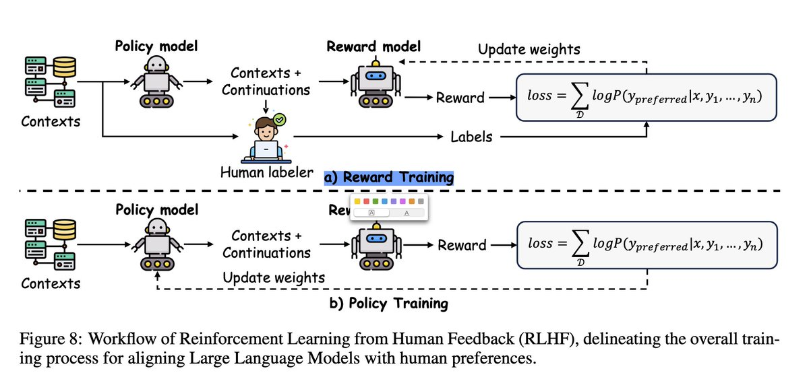
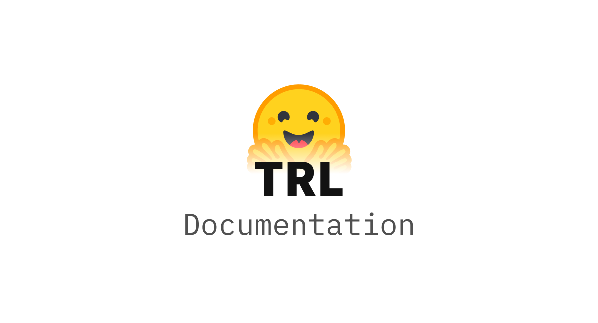

er
Share this page!
Enter URL or ID to Unroll
You can paste full URL like: https://x.com/threadreaderapp/status/1644127596119195649
or just the ID like: 1644127596119195649
How to get URL link on X (Twitter) App
On the Twitter thread, click on
or
icon on the bottom
Click again on
or
Share Via icon
Click on
Copy Link to Tweet
Paste it above and click "Unroll Thread"!
More info at
Twitter Help
<iframe id="google_ads_frame0" src="index_2.html">
twitter-profile#error">
马东锡 NLP
@dongxi_nlp
Mar 21
•
4 tweets
•
1 min read
•
Read on X
Reinforcement Learning from Human Feedback (RLHF)
前面分享介绍过，当下Large Reasoning Model的时代，几乎等于 RL + LLM 的时代。而在post training中，RLHF是最早有效的将RL和LLM结合的方法。
那么问题来了， 人类的feedback是如何传递，训练，使得模型最终可以对齐人类喜好的方式，进行输出的？
本次分主要分享什么是RLHF, 以及经典的两步走 - SFL+RL的RLHF方法。

RLHF是一种结合监督学习（Supervised Learning）和强化学习（Reinforcement Learning）的训练方法，专注于让AI模型更贴合人类喜好与期望， 即所谓的alignment（对齐）。尤其是在Agent时代，RLHF可以确保AI更安全、更符合伦理、更可靠地，以及拥有更强的reasoning能力。
RLHF一般分为两个核心阶段，两步走：
首先，通过SFT，模型先学习大量由人类编写的高质量样本， 获得输出类似微调样本数据分布的能力，这一步可以理解为让模型成为人类feedback的代理，这一步获得的模型也被称为Reward model。
接下来，通过RL，利用第一步训练好的Reward Model 进一步优化。这一步通过reward model打分，明确地把人类feedback强行灌输给模型，远超单纯监督学习的效果，最终得到Policy model。
具体来说，在RL阶段，模型基于Context 生成Outputs，由第一步训练好的Reward Model对这些回应进行评分。这种奖励模型能预测outputs与human feedback之间的贴合程度。通过PPO 等强化学习方法，模型持续迭代地更新自身参数，从而更有效地实现人类偏好的精准对齐 （alignment）。
同样的，RLHF也能有效地提升LLM的推理能力。执行经典的两步走，通过鼓励模型生成清晰、系统且逻辑严谨的推理步骤（如CoT），并由人类给予明确的反馈和评分，模型不仅学会产出正确答案，还能清楚说明解决问题的逻辑路径。经过多轮这样的反馈迭代，模型的推理能力会变得更加完善。
附上一个ppo trainer：
huggingface.co/docs/trl/main/…

PPO Trainer
https://huggingface.co/docs/trl/main/en/ppo_trainer
• • •